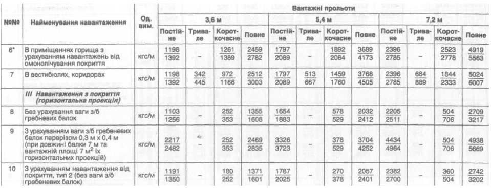

Необхідно описати веб-сторінку для відображення таблиці навантажень.

| №№ | Найменування навантаження | Од. вим. | Вантажні прольоти | |||||||||||
|---|---|---|---|---|---|---|---|---|---|---|---|---|---|---|
| 3,6 м | 5,4 м | 7,2 м | ||||||||||||
| Постійне | Тривале | Короткочасне | Повне | Постійне | Тривале | Короткочасне | Повне | Постійне | Тривале | Короткочасне | Повне | |||
| 6* | В приміщеннях горища з урахуванням навантажень від омонолічування покриття | кгс/м | 1198 1392 | - | 1261 1389 | 2459 2782 | 1797 2089 | - | 1892 2084 | 3689 4173 | 2396 2785 | - | 2523 2778 | 4919 5563 |
| 7 | В вестибюлях, коридорах | кгс/м | 1198 1392 | 342 445 | 972 1166 | 2512 3003 | 1797 2089 | 513 667 | 1459 1760 | 3768 4505 | 2396 2785 | 684 889 | 1844 2333 | 5024 6007 |
|
III Навантаження з покриття
(горизонтальна проекція) |
||||||||||||||
| 8 | Без урахування ваги з/б гребеневих балок | кгс/м | 1103 1256 | - | 252 353 | 1355 1608 | 1654 1883 | - | 578 529 | 2032 2412 | 2205 2511 | - | 504 706 | 2709 3217 |
| 9 | З урахуванням ваги з/б гребеневих балок перерізом 0,3 м × 0,4 м (при довжині балки 7 м та вантажній площі 7 м² їх горизонтальних проекцій) | кгс/м | 2217 2482 | - | 252 353 | 2469 2835 | 3326 3723 | - | 378 529 | 3704 4252 | 4434 4964 | - | 504 706 | 4938 5669 |
| 10 | З урахуванням навантаження від покриття, тип 2 (без ваги з/б гребеневих балок) | кгс/м | 1191 1350 | - | 180 252 | 1371 1601 | 1787 2025 | - | 270 378 | 2057 2401 | 2382 2700 | - | 360 504 | 2742 3202 |